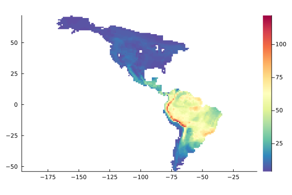
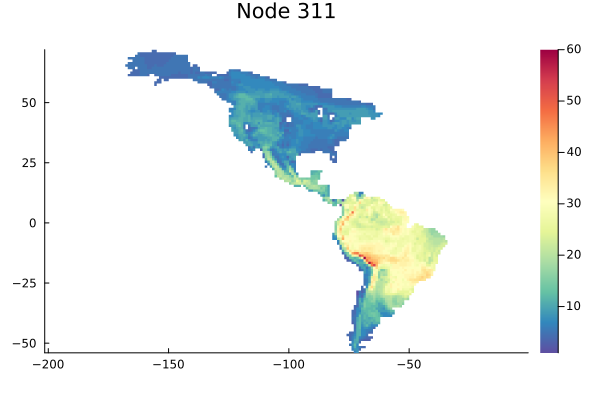
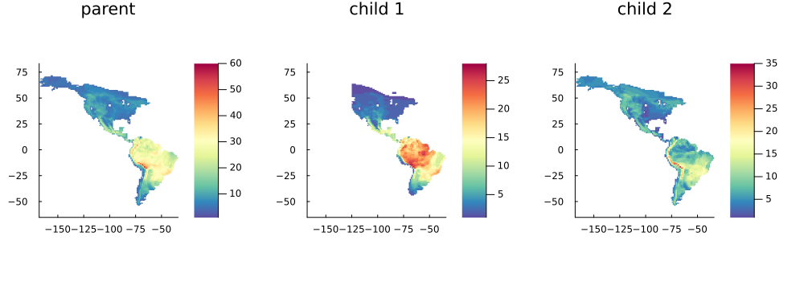
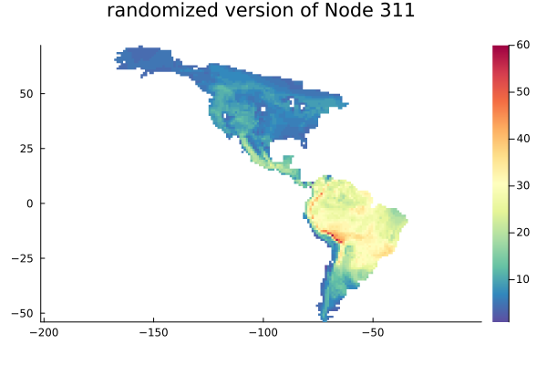
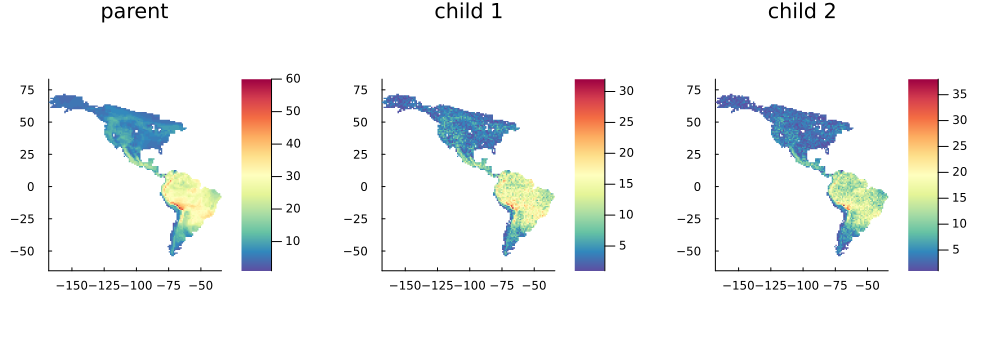
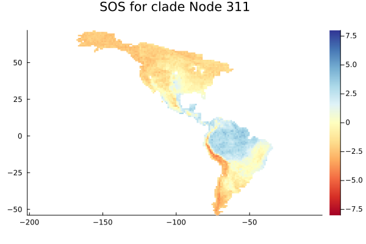
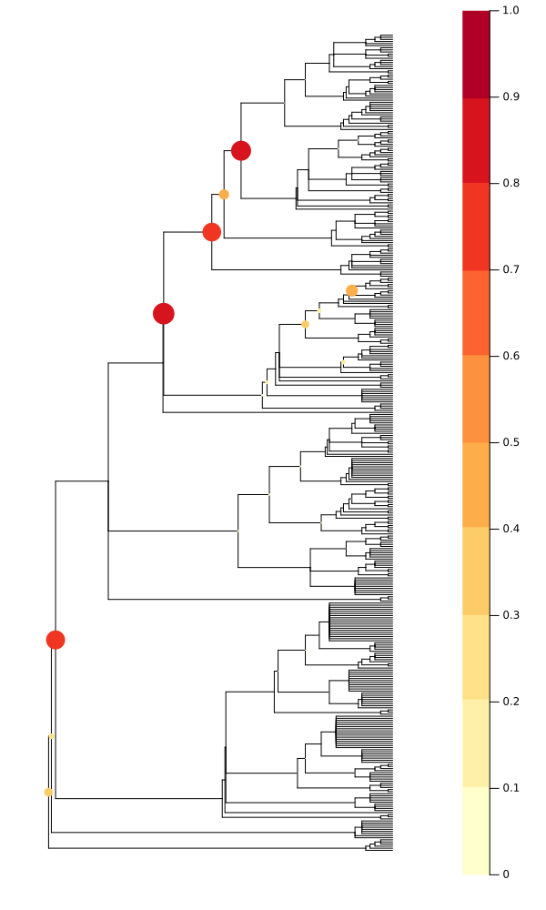

Node-based analysis of species distributions
This example demonstrates how to do a node-based comparison of species distributions, as described in Borregaard, M.K., Rahbek, C., Fjeldså, J., Parra, J.L., Whittaker, R.J. and Graham, C.H. (2014). Node-based analysis of species distributions. Methods in Ecology and Evolution 5: 1225-1235.
We will reimplement the method from the paper from first principles, using SpatialEcology functionality and the ecojulia phylogenetics package Phylo. We start by loading the basic data objects and end up with defining a function with the full functionality of the published paper.
We will work with the distributions and phylogenetic relationships for all species of the family Tyrannidae in the Americas. The species occurrences are defined on a regular grid with a cellsize of 1 lat/long degree. This is one of the datasets used in the Borregaard et al. (2014) paper.
Load data and create objects
First, let's load the data.
Species occurrence data for spatial ecological analysis exists in a variety of different formats. A common format is to have the data in one or several CSV files.
In this case, we have the data in two CSV tables, one of species occurrences in each grid cell, and one with the lat-long coordinates of each grid cell.
The CSV table of occurrences is in the widely used phylocom format, which is a long-form format for associating the occurrence of species in sites. It consists of three columns, a column of species names, one of abundances (here all have the value 1, as it's a presence-absence data set) and a column of sites:
using CSV, DataFrames, SpatialEcology
phylocom = CSV.read("../../data/tyrann_phylocom.tsv", DataFrame)
first(phylocom, 4)| Row | Plot | Record | Species |
|---|---|---|---|
| Int64 | Int64 | String | |
| 1 | 6504 | 1 | Empidonax_hammondii |
| 2 | 6504 | 1 | Empidonax_alnorum |
| 3 | 6504 | 1 | Sayornis_saya |
| 4 | 6504 | 1 | Contopus_cooperi |
The coordinates is a simple DataFrame with a column of sites, one of latitude and one of longitude:
coord = CSV.read("../../data/tyrann_coords.tsv", DataFrame)
first(coord, 4)| Row | Long | Lat | cell |
|---|---|---|---|
| Float64 | Float64 | Int64 | |
| 1 | -156.5 | 71.5 | 6504 |
| 2 | -155.5 | 71.5 | 6505 |
| 3 | -162.5 | 70.5 | 6858 |
| 4 | -161.5 | 70.5 | 6859 |
We ensure that the column of sites are represented as strings in both data sets. We then construct the Assemblage object. The site columns are used to match the two DataFrames together.
phylocom.Plot = string.(phylocom.Plot)
coord.cell = string.(coord.cell)
tyrants = Assemblage(phylocom, coord)Assemblage with 390 species in 3716 sites
Species names:
Empidonax_hammondii, Empidonax_alnorum, Sayornis_saya...Muscisaxicola_capistratus, Neoxolmis_rufiventris
Site names:
6504, 6505, 6858...51588, 51589
Let's have a look at the data:
using Plots
default(color = cgrad(:Spectral, rev = true))
plot(tyrants)
Next, we'll read in the phylogenetic tree:
using Phylo
tree = open(parsenewick, "../../data/tyrannid_tree.tre")
sort!(tree) # sort the nodes on the tree in order of size - useful for plotting
plot(tree, treetype = :fan, tipfont = (5,))
Extract information from a single clade
The Phylo package uses iterators over vertices in the phylogeny for almost everything. For example, to get a vector of all internal (non-tip) nodes in the phylogeny, we would create an iterator over the names of all nodes in the tree, filtered by the function isleaf, which checks whether a node has any descendants, and then collect the iterator to a vector.
nodes = nodenamefilter(!isleaf, tree)
nodevec = collect(nodes)
first(nodevec, 4)4-element Vector{String}:
"Fluvicola"
"Alectrurus"
"Node 12"
"Node 14"Let's pick a random node from the vector to demonstrate how we can get information on that node.
randnode = nodevec[131]"Node 311"We can get a list of the names of all tips/species descending from the node by getting all descendant nodes with getdescendants and filtering with isleaf. We need to pass an anonymous function to filter here, because the isleaf function takes two arguments.
nodespecies(tree, node) = filter(x -> isleaf(tree, x), getdescendants(tree, node))
first(nodespecies(tree, randnode), 4)4-element Vector{String}:
"Myiotheretes_fuscorufus"
"Myiotheretes_pernix"
"Myiotheretes_fumigatus"
"Myiotheretes_striaticollis"We can use that species list to subset an Assemblage object. For instance, we can make a function to create a smaller Assemblage of all species descending from our selected node.
get_clade(assemblage, tree, node) = view(assemblage, species = nodespecies(tree, node))
rand_clade = get_clade(tyrants, tree, randnode)
plot(rand_clade, title = randnode)
Comparing the richness of sister clades
The question we are interested in addressing here is: At a given node where the lineage splits into two sister clades - are the two descendant clades distributed differently? This could be an indication that an evolutionary or biogeographic event happened at that time, of consequence for the current distribution of the species.
So let's get the two descendant clades, and plot their distribution in comparison to the parent clade
function plot_node(assemblage, tree, node)
ch1, ch2 = getchildren(tree, node)[1:2]
assm = get_clade(assemblage, tree, node)
assmch1 = get_clade(assm, tree, ch1)
assmch2 = get_clade(assm, tree, ch2)
plot(
plot(assm), plot(assmch1), plot(assmch2),
layout = (1,3), size = (1000, 350), title = ["parent" "child 1" "child 2"]
)
end
plot_node(tyrants, tree, randnode)
It is clear that the two clades have distinct distributions, with the first descendant appearing to be overrepresented in the tropical rainforest biome, mainly in the Amazon.
But is the difference great enough that we can say that this is not just a random pattern? We can use randomization to find out.
Using randomization to assess significance of distribution differences
SpatialEcology Assemblages can be randomized using the curveball matrix randomization algorithm defined in RandomBooleanMatrices.jl.
This algorithm randomizes a species-by-site matrix while keeping row and column sums constant, and is very fast. We can instantiate a matrixrandomizer object from our assemblage, and then use this object to repeatedly generate randomized communities
rmg = matrixrandomizer(rand_clade)
newcomm = rand(rmg)
plot(newcomm, title = "randomized version of $randnode")
Because row and column sums are kept constant, the richness of the randomized community is the same. But the richness of the two descendant clades will be different - let's look at our focal node:
ch1, ch2 = getchildren(tree, randnode)[1:2]
randch1 = get_clade(newcomm, tree, ch1)
randch2 = get_clade(newcomm, tree, ch2)
plot(
plot(rand_clade), plot(randch1), plot(randch2),
layout = (1,3), size = (1000, 350), title = ["parent" "child 1" "child 2"]
)
This represents a random expectation for the species richness of the two descendant clades should be.
We can repeat this process 100 times and store the species richness of one of the clades in order to get a sampling distribution. The mean and standard deviation of this distribution can be used to assess how unexpected our empirically observed distribution is.
We will focus just on one of the descendants, child clade ch2. The pattern for the other descendant is essentially a mirror image.
using Random: rand!
function simulate_descendants(clade, tree, descendant; nsims = 99)
rmg = matrixrandomizer(clade)
ret = zeros(nsims + 1, nsites(clade)) # a matrix to hold the richness values from the simulations
# the empirical richness in the first row
ret[1, :] = richness(get_clade(clade, tree, descendant))
for i in 2:nsims + 1
# and simulated richness in the rest of the nsims rows
ret[i, :] .= richness(get_clade(rand!(rmg), tree, descendant))
end
ret
end
sims = simulate_descendants(rand_clade, tree, ch2)100×3716 Matrix{Float64}:
4.0 4.0 5.0 4.0 4.0 4.0 4.0 4.0 … 4.0 6.0 8.0 8.0 4.0 6.0 8.0
3.0 2.0 3.0 2.0 3.0 1.0 2.0 2.0 2.0 5.0 2.0 5.0 0.0 3.0 5.0
2.0 2.0 2.0 2.0 2.0 1.0 2.0 1.0 3.0 2.0 3.0 3.0 1.0 4.0 5.0
1.0 2.0 2.0 2.0 3.0 3.0 3.0 1.0 2.0 3.0 4.0 6.0 2.0 3.0 4.0
3.0 1.0 2.0 2.0 2.0 2.0 2.0 2.0 1.0 3.0 4.0 3.0 1.0 5.0 4.0
1.0 1.0 4.0 3.0 2.0 2.0 2.0 3.0 … 2.0 4.0 5.0 5.0 1.0 2.0 3.0
1.0 2.0 1.0 2.0 1.0 3.0 2.0 3.0 0.0 4.0 2.0 3.0 1.0 3.0 3.0
1.0 1.0 2.0 1.0 2.0 3.0 1.0 2.0 2.0 3.0 6.0 3.0 2.0 2.0 4.0
2.0 1.0 2.0 0.0 3.0 1.0 1.0 2.0 2.0 4.0 4.0 4.0 1.0 3.0 4.0
2.0 4.0 1.0 1.0 3.0 2.0 1.0 4.0 1.0 3.0 4.0 4.0 0.0 4.0 5.0
⋮ ⋮ ⋱ ⋮ ⋮
2.0 2.0 1.0 3.0 2.0 3.0 3.0 1.0 3.0 5.0 3.0 5.0 2.0 4.0 3.0
1.0 2.0 4.0 2.0 2.0 0.0 1.0 1.0 1.0 3.0 3.0 3.0 2.0 1.0 3.0
0.0 2.0 3.0 2.0 2.0 2.0 1.0 2.0 1.0 5.0 4.0 5.0 3.0 1.0 2.0
1.0 2.0 3.0 3.0 2.0 2.0 1.0 1.0 2.0 2.0 1.0 3.0 2.0 3.0 4.0
1.0 2.0 3.0 2.0 2.0 3.0 0.0 0.0 … 1.0 3.0 5.0 5.0 0.0 2.0 2.0
3.0 1.0 4.0 2.0 1.0 3.0 3.0 1.0 1.0 3.0 5.0 2.0 4.0 1.0 5.0
2.0 1.0 4.0 1.0 3.0 1.0 2.0 2.0 3.0 3.0 3.0 5.0 1.0 4.0 5.0
1.0 3.0 2.0 4.0 1.0 1.0 2.0 3.0 1.0 2.0 2.0 5.0 2.0 3.0 4.0
3.0 1.0 3.0 2.0 2.0 2.0 1.0 2.0 2.0 1.0 5.0 5.0 3.0 4.0 4.0Then we calculate the mean and standard deviation across simulations and use this to express the empirical richness values as standardized effect sizes. The resulting standardized effect size for each grid cell constitutes the SOS metric of Borregaard et al. (2014).
To calculate this for our focal cell and plot it we can do:
using Statistics
function calculate_SOS(sims)
sd = std.(eachcol(sims))
me = mean.(eachcol(sims))
(sims[1, :] .- me) ./ sd
end
sims = simulate_descendants(rand_clade, tree, ch1)
SOS = calculate_SOS(sims)
plot(SOS, rand_clade, clim = (-8,8), fillcolor = :RdYlBu, title = "SOS for clade $randnode")
We see a clear distinction between the two clades descending from our focal node, where one descendant is overrepresented in tropical moist forest and the other in colder regions.
The strength of divergence among the two clades is summarized by the GND value (Borregaard et al. 2014)
using StatsBase: tiedrank
function calculate_GND(sims)
# two internal convenience functions
logit(p) = log(p/(1-p))
invlogit(p) = exp(p)/(1+exp(p))
n = size(sims, 1)
r = [tiedrank(x)[1]/(n + 1) for x in eachcol(sims)]
p = 1 .- 2 .* abs.(r .- 0.5) .- 1/n
α = mean(logit.(p))
1-invlogit(α)
end
GND = calculate_GND(sims)
first(GND, 4)1-element Vector{Float64}:
0.8800890910747056Putting it all together
We can use all of the above to go through the entire phylogeny and generate SOS and GND values.
First, let us create a function that calculates both metrics
function process_node(assemblage, tree, nodename; nsims = 100)
clade = get_clade(assemblage, tree, nodename)
children = getchildren(tree, nodename)
if length(children) != 2 || any(x -> isleaf(tree, x) || nspecies(get_clade(assemblage, tree, x)) < 4, children)
return (fill(NaN, nsites(clade)), NaN)
end
sims = simulate_descendants(clade, tree, children[1]; nsims)
calculate_SOS(sims), calculate_GND(sims)
end
# use as
SOS, GND = process_node(tyrants, tree, randnode)([-2.0002247848026826, -1.9170536601384425, -2.219840037562821, -2.303825278479931, -2.3425699100819335, -2.340190623982783, -2.225436839547115, -2.5463950585529185, -2.0834086446358544, -2.281958256049444 … -2.8427990627056388, -2.5451267923763563, -2.3494166287542444, -1.794484072927327, -2.5813372042594933, -3.3046990625076993, -3.037871023397445, -2.1703336342573523, -2.5201809958178267, -3.0342150857609305], 0.8802552278253393)Final step: Applying the method to the entire tree
Finally, we can now go through every node on the tree and calculate the metrics.
This function recreates the functionality of the main Node_analysis function of the nodiv R package:
using ProgressLogging
function node_based_analysis(assemblage::Assemblage, tree::AbstractTree)
nodevec = [getnodename(tree, x) for x in traversal(tree, preorder) if !isleaf(tree, x)] #shuffle!(collect(nodenamefilter(!isleaf, tree)))
SOSs = Matrix{Float64}(undef, nsites(tyrants), length(nodevec))
GNDs = Vector{Float64}(undef, length(nodevec))
@progress for (i, node) in enumerate(nodevec)
SOSs[:,i], GNDs[i] = process_node(tyrants, tree, node)
end
SOSs, GNDs
end
SOSs, GNDs = node_based_analysis(tyrants, tree);([-0.3112193950224509 NaN … NaN NaN; -0.2918386665664969 NaN … NaN NaN; … ; -0.5425789814290116 NaN … NaN NaN; -0.6002431946542323 NaN … NaN NaN], [0.35931811682044956, NaN, NaN, NaN, NaN, 0.2271096569232015, NaN, NaN, 0.7764162501147365, NaN … NaN, NaN, NaN, NaN, NaN, NaN, NaN, NaN, NaN, NaN])Let's visualize the GND values on the tree:
plot(tree,
showtips = false, marker_z = GNDs,
color = cgrad(:YlOrRd, 10, categorical = true),
markersize = 15 .* GNDs, markerstrokewidth = 0,
size = (600, 1000), clim = (0,1)
)
We notice that a few of the nodes stand clearly out with significant distributional changes. We can then proceed to map the SOS values for these nodes and interpret the distributional history.